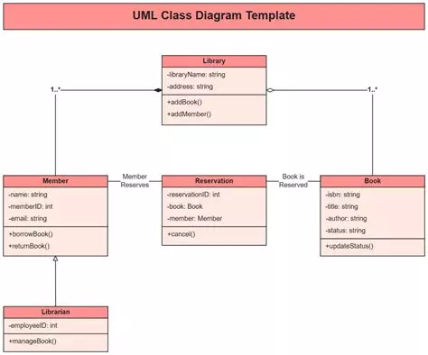
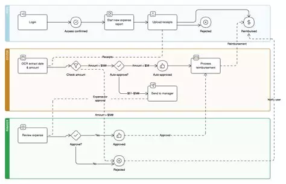

Sektsioon I · Milan
Enterprise Architect
Professionaalne CASE-platvorm modelleerimiseks
Ajalugu
- Looja: Sparx Systems (Austraalia)
- Arenduse algus: 1998. aasta
- Eesmärk: Luua taskukohane, kuid võimas UML-modelleerimise tööriist ettevõtete tasemel — alternatiiv kallitele Rational Rose lahendustele
- Areng: Arendatakse aktiivselt; viimased versioonid (16.x) sisaldavad ArchiMate, BPMN, SysML tuge ja pilvefunktsioone
Põhifunktsioonid
- Täielik UML 2.x tugi (15 diagrammitüüpi)
- Äriprotsesside modelleerimine (BPMN 2.0)
- Koodi genereerimine (Java, C#, C++, Python)
- Lähtekoodi pöördprojekteerimine
- Nõuete haldus ja jälgitavus
- Meeskonnatöö ühise repositooriumi kaudu
- Eksport XMI, HTML, PDF, Word formaatidesse


×